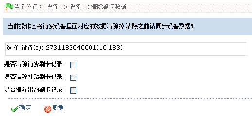
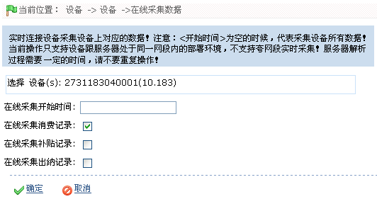
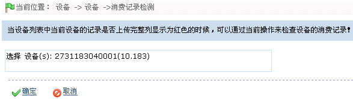
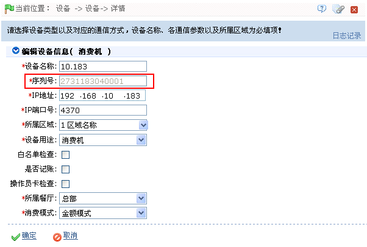
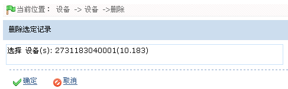

IC--8.9 消费设备管理
点击【消费】 【消费设备管理】，进入如下图所示消费设备管理页面：
【消费设备管理】，进入如下图所示消费设备管理页面：

 注意：执行以下操作时，设备与服务器必须处于连接状态。
注意：执行以下操作时，设备与服务器必须处于连接状态。
1、清除消费机设置：清除消费设备基本资料设置，不包含设备刷卡数据。
操作方法：
选中设备，点击【清除消费机设置】，进入清除的确认页面，单击【确定】按钮清除；单击【取消】按钮放弃操作。
2、清除刷卡数据：清除设备中所有员工的刷卡数据。
 备注：执行此操作时，请先执行同步所有数据操作。
备注：执行此操作时，请先执行同步所有数据操作。
操作方法：
（1）、选中设备，点击【清除刷卡数据】，进入清除刷卡数据页面：

（2）、根据需要选择“是否清除消费刷卡记录”、“是否清除补贴刷卡记录”和“是否清除出纳刷卡记录”（打勾，即选择）。
（3）、设置完成后，单击【确定】按钮清除刷卡数据，并返回消费设备管理页面。
3、在线采集数据：采集设备上的所有数据，包括：消费数据、补贴数据、充值与退款数据。
 注意：在线采集数据操作只能采集与服务器处于同一网段内的消费设备内的数据，不支持跨网段实时采集数据。
注意：在线采集数据操作只能采集与服务器处于同一网段内的消费设备内的数据，不支持跨网段实时采集数据。
（1）、选中设备，点击【在线采集数据】，进入在线采集数据页面：

根据需要进行采集前设置，具体设置方法如下：
在线采集开始时间：设置在线采集的开始时间。时间的设置方法，请参见附录1 常用操作中的8. 选择日期与时间。
在线采集消费记录、在线采集补贴记录、在线采集出纳记录：选择是否采集消费记录、补贴记录和出纳记录，打勾，即选中。
（2）、设置完成后，单击【确定】按钮，开始采集数据。
4、消费记录检测：当设备列表中当前设备的记录“是否是否解析完整”列显示为红色的时候，可以通过当前操作来检查设备的消费记录！通过检查设备流水号是否正确，来检测设备记录是否丢失；检查消费记录是否解析完整（查看“待解析文件”与“待解析命令”）。
（1）、选中设备，点击【消费数据检测】，进入消费数据检测页面：

（2）、单击【确定】按钮，开始检测。
5、下发采集命令：下发一条采集所有数据的命令到设备。采集设备上所有数据，包括：消费数据，补贴数据，充值.退款数据！
操作方法：
选中设备，点击【下发采集命令】，进入下发采集命令的确认页面，单击【确定】按钮下发采集命令；单击【取消】按钮放弃操作。
6、重启设备：远程重启被选中的设备。
操作方法：
选中设备，点击【重启设备】，进入重启的确认页面，单击【确定】按钮重启设备；单击【取消】按钮放弃操作。
7、同步时间：同步设备与服务器时间，以便采集准确的消费数据。
操作方法：
选中设备，点击【同步时间】，进入同步时间的确认页面，单击【确定】按钮同步时间；单击【取消】按钮放弃操作。
8、同步软件数据到设备：将服务器中的数据同步到设备中。
操作方法：
选中设备，点击【同步软件数据到设备】，进入确认页面，单击【确定】按钮同步所有数据。
 备注：仅当存在客观因素（如网络异常或其他情况），导致设备与服务器中的数据不一致时，才需要执行此操作。
备注：仅当存在客观因素（如网络异常或其他情况），导致设备与服务器中的数据不一致时，才需要执行此操作。
9、编辑消费设备
（1）、在消费设备管理页面的消费设备列表中，单击“设备名称”，或单击设备所在行的“相关操作”下对应的【编辑】按钮，进入编辑消费设备页面：

 备注：“序列号”不可修改，其他参数的修改方法，同新增消费设备一致，请参见5.2.2 新增消费设备。
备注：“序列号”不可修改，其他参数的修改方法，同新增消费设备一致，请参见5.2.2 新增消费设备。
（2）、根据修改各参数，修改完成后，单击【确定】按钮，保存修改后的设备信息。
10、删除设备
（1）、在消费设备管理页面的消费设备列表中，单击选中需删除的消费设备，然后单击消费设备列表上方的【删除】按钮，或单击设备所在行的“相关操作”下对应的【删除】按钮，进入删除消费设备的确认页面：

（2）、单击【确定】按钮，确认并删除被选中的消费设备。